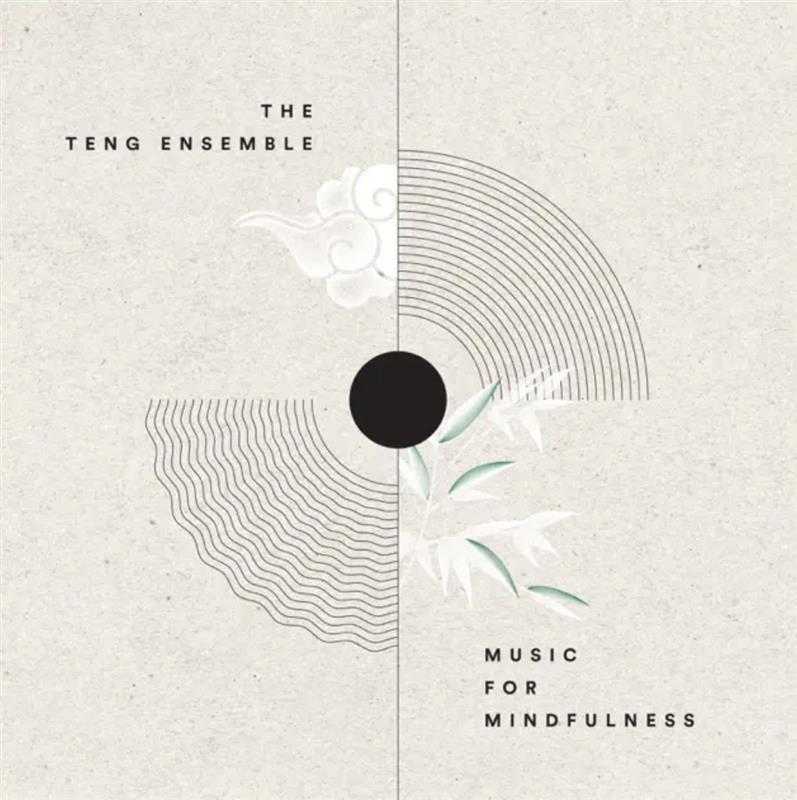

ON SOURCE: MUSEUM FOR THE UNITED NATIONS
Kai Picture
Feb 16
Written By UN Live
Tunes for Transformation: How Ancient Chinese Music Inspires Positive Change
In an ever-evolving world, music has the ability to stand as a timeless catalyst for positive transformation. Beyond notes and rhythms, it carries the potential to bridge divides, stir up feelings and emotions, unlock empathy, shift behaviour, and ignite collective action for a sustainable future.
In this article, we delve into the depths of music for social good, uncovering its remarkable ability to transcend cultural, social, and emotional barriers. From uplifting and relaxing melodies that bring joy and calm, to creating and listening to music that bonds people together — we met with Teresa Fu, Head of Development at The TENG Company to explore the myriad ways in which music serves as a tool for hope and connection.
Music as a tool for change
The science behind the power of music is well documented. We know that listening to music and singing together may be particularly potent in bringing about connection and closeness, serving as a tool to bridge divides. Music also has the ability to improve focus, raise morale, and alter brainwaves to induce a meditative state.
Since 2018, The TENG Company, a Singapore-based not-for-profit organisation, has been dedicated to leveraging the power of Chinese music for social impact. Their initiatives focus on healing, offering comfort, and uplifting spirits among vulnerable populations. Through their work, they create and perform stress-relieving music, collaborate with nursing homes, treatment centres, and support youth with special needs, as well as foster self-esteem and confidence by nurturing students' musical potential.
In what way does music impact individuals as a catalyst for positive change?
“There are positive benefits, but it differ on whether it's listening to music, or making music. For example, in our ‘TENG Gives Back’ and ‘Music for Mindfulness’ projects, the beneficiaries experience an uplift in spirits and reduced stress and anxiety respectively. Whereas for our In-School Programmes for Targeted Students and Mapletree-TENG Scholarship, the students and scholars gain opportunities to pick up or strengthen their music skills and showcase their confidence and teamwork in music performances.”
‘Music for Mindfulness’ - A fusion music series with binaural beats

‘Music for Mindfulness’, Apple Music
“Music for Mindfulness” is one of TENG’s programmes that emerged during the pandemic with the hope to combat the youth mental health crisis, as well as bring anxiety-reducing music to people’s homes.
Through the combination of traditional Chinese instruments with modern technology, including electronics and Binaural Beats (BB), The TENG Company crafted a collection of 10 compositions for mindfulness. These works were subsequently tested for their anxiety-reducing effects and performed by their very own The TENG Ensemble — a collective of music educators, scholars, and award-winning instrumentalists.
Binaural beats are generated when two tones of different frequencies are presented concurrently to each ear but perceived as one. Several existing studies demonstrate that binaural beats may reduce stress and anxiety, however, research has been missing on the adoption of Chinese instrumental music as a medium for BB.
Ancient Chinese music has always emphasised being holistic in its composition. The Pentatonic scale used in Chinese music: 宫 Gong, 商 Shang, 角 Jue, 徵 Zhi, 羽 Yu correlates with the five elements - 金 Metal, 木 Wood, 水 Water, 火 Fire, 土 Earth, which can be seen in the ancient Chinese instrument ‘Guzheng’ that The TENG Ensemble has used in their compositions.
In 2020, a study conducted by The TENG Company in partnership with the Singapore Chinese Cultural Centre found that participants exposed to TENG's binaural beats reported lower state-anxiety compared to those who listened to an audiobook. The 151 participants were randomly assigned to listen to TENG music with binaural beats, TENG instrumental music, or an audiobook for thirty minutes.
In your view, why is it important to leverage the power of popular culture such as music to drive positive change?
“As part of our vision to inspire and create impact by fusing our traditional musical heritage with our unique Singaporean identity, we strive to reinvent the perception of Chinese instruments. While it is important to retain and grow with our existing audience, we also need to emphasize building new audiences by harnessing the power of popular culture.”
Bridging divides through shared experiences
Through the shared experience of melody, rhythm and joy, music can be an incredible tool to transcend barriers, connect people and cultivate empathy.
Beyond the ‘Music for Mindfulness’ album, The TENG Ensemble has also produced several original and adapted works and projects, to reinvent perceptions of Chinese music, and stretch the art form beyond its traditional roots.
Their original compositions, in collaboration with music therapists and instrumentalists, serve as therapeutic tools, reaching beyond concert halls to those unable to attend. Through 'TENG Gives Back', they bring comfort, joy, and something refreshing to long-term residents of community
hospitals and nursing homes.
Since 2018, The TENG Ensemble has performed for approximately 10,300 patients as part of ‘TENG Gives Back’, sharing the healing power of music through moments of joy and connection.
How do you see that music can play a role in building a ‘Global We’ - a stronger sense of global belonging and empathy.
“Music is a language, but it is a language that transcends boundaries, culture, and languages. To quote Hans Christian Andersen, ‘Where words fail, music speaks’”.
- Dr. Samuel Wong, Co-Founder and Creative Director at The TENG Company
For individuals inspired by your research, aspiring to leverage music for good, do you have any recommendations on initiating such endeavours?
“The TENG Company has a three-step process: FMS.
1. Form - Musicians and/or individuals need to understand the form of the music they are looking at 2. Meaning - Musicians and/or individuals need to look at their predecessors and learn from them
3. Self - With both Form and Meaning, individuals should then understand what's happening in the market and then execute their ideas with confidence.”
- Dr. Samuel Wong, Co-Founder and Creative Director at The TENG Company
Extending a heartfelt appreciation to the Li Foundation for organising the 'Inspiring Asia Film Festival', where we had a chance to meet the inspiring TENG Company. The event brought together 28 diverse organisations to showcase 16 remarkable films, providing UN Live the opportunity to present an upcoming programme to the audience. Anchored by the theme “Asia Narratives: Shaping The Future, One Story At A Time,” this event united creative minds from different countries, providing a captivating space to share their influential work through engaging film screenings.
Resources:
- https://www.thetengcompany.com/
- https://greatergood.berkeley.edu/article/item/how_music_bonds_us_together
- https://www.ncbi.nlm.nih.gov/pmc/articles/PMC6414444/
- https://fedora.kug.ac.at/fedora/get/o:30677/bdef:Content/get
SOURCE: MUSEUM FOR THE UNITED NATIONS